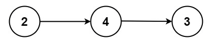

Learning Objectives:
Software Tools Needed: Web browser to access textbook and an IDE (on-line or on computer) with core Python 3.6+ loaded.
In lecture this week, we introduced the concept of Abstract Data Type (ADT) The textbook has an overview of abstraction and ADT's:
In Chapter 3, they go into more detail than the above introduction, starting with linear data type: stacks. Work through sections 3.1 (introduction) to 3.6 (balanced parenthesis):
Using the approach in Section 3.6, try Program 17.
In Chapter 3, the textbook shows several different implementions for each of linear ADT's. One of the most basic one, a linked list, in Sections 3.19 (Lists) to 3.21 (Implementation):
As shown in lecture and the textbook section above, linked lists are built up from nodes. Here's the simple node from lecture (and many LeetCode challenges):
class ListNode:
def __init__(self, val=0, next_node=None):
"""
Textbook's node class, with next_node for next (for pylint warning)
"""
self.val = val
self.next = next_nodeEach ListNode has two attributes: its value and a link to the next node in the list. We often represent this pictorially as:

The first node has val of 2 and a link to the next node which has val of 4. That node has a link to the next node and so on. If the attribute next is None, then there's nothing after it, and it's our last item in the list.
We can traverse a linked list in a similar fashion to our regular lists. Say our list is stored in the variable, lst_1, then we can a follow a basic recipe:
#Initialize our counter to start at the head of the list:
current = lst_1
while ( current is not None ):
#Do some action, like searching, updating, etc.
#Move to the next:
current = current.next
Let's focus on a standard example: finding an element, target, in our list. We can add the check into the template above:
#Initialize our counter to start at the head of the list:
current = lst_1
found = False
while ( current is not None ):
#Check if current node is target:
if current.val == target:
found = True
current = None
else:
#Move to the next:
current = current.next
We set a flag, found, to False before we start the loop. If we find target, we will set found to True, and also set current to None so that we don't keep going through the loop since it's been found.
Using the template above, try Program 16.
For additional practice on core Python, see the HackerRank prepare series:
HackerRank: Prepare Python
Click the Easy option on the right hand menu, and work through their Python challenges.
For more practice on using stacks to solve problems, here are some popular ones from LeetCode: